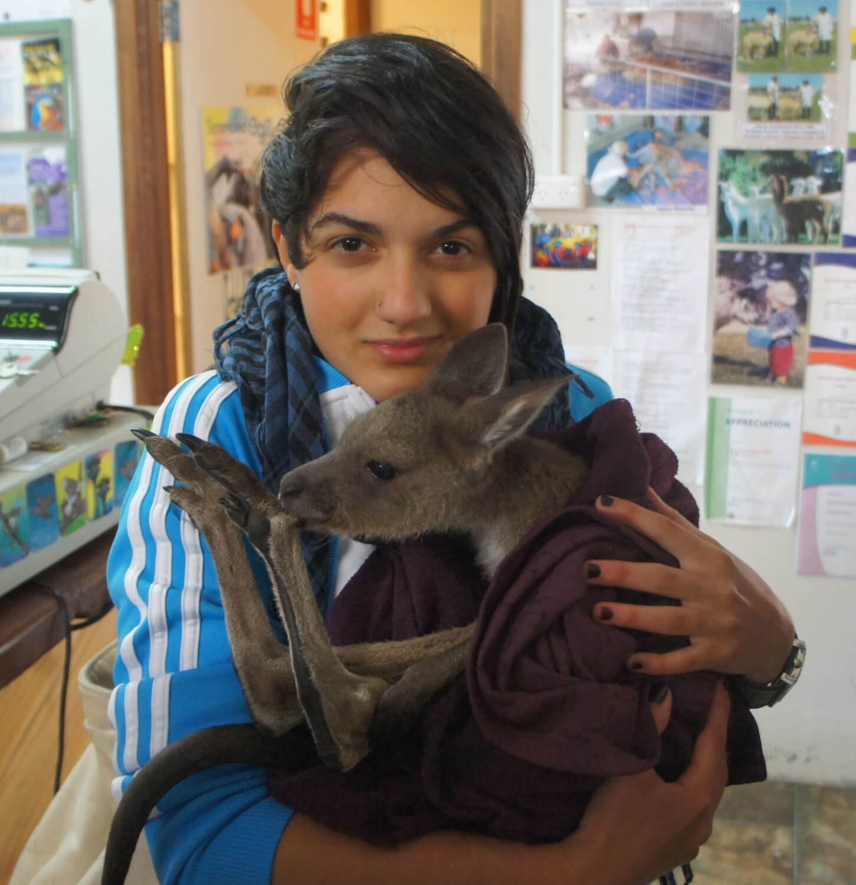

About Me
In 2009, I left Brazil and traveled to Australia for what would become one of the most meaningful chapters of my life. What started as a simple trip quickly turned into a journey filled with new places, friendships, and experiences that shaped the way I see the world today. This project was created as a way to revisit those moments. Through the destinations, photos, and stories shared here, I’ve tried to capture not just where I went, but how it felt to be there — discovering a new country, building connections, and embracing the unknown. From quiet sunsets at Cottesloe Beach to unforgettable trips with friends and everyday moments in Perth, each memory holds a special place. Even after all these years, they remain vivid and deeply meaningful. At the same time, this website is also part of my journey into tech. It represents my growth as a developer — combining storytelling, design, and code to create something personal and interactive. Whether you’re here out of curiosity, planning your own trip, or simply exploring, I hope this space inspires you in some way — just like Australia once inspired me.
